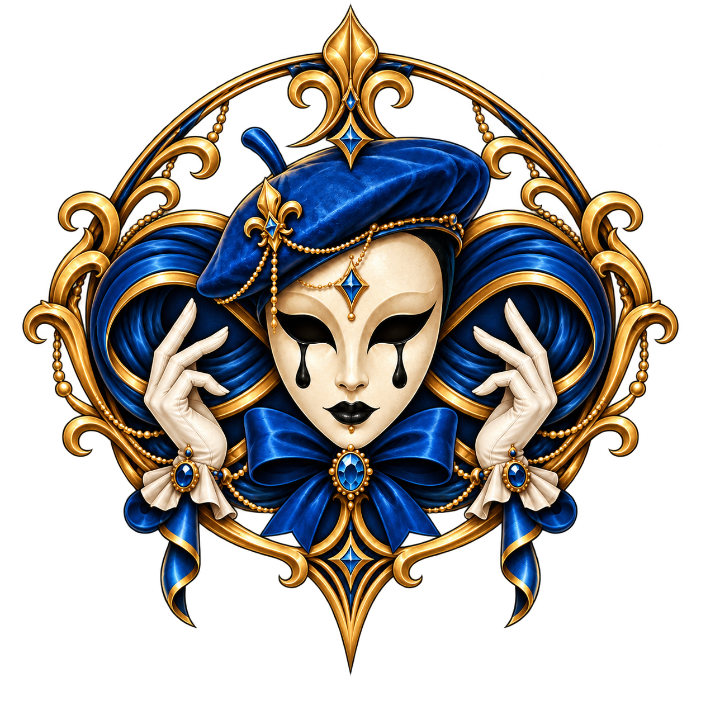
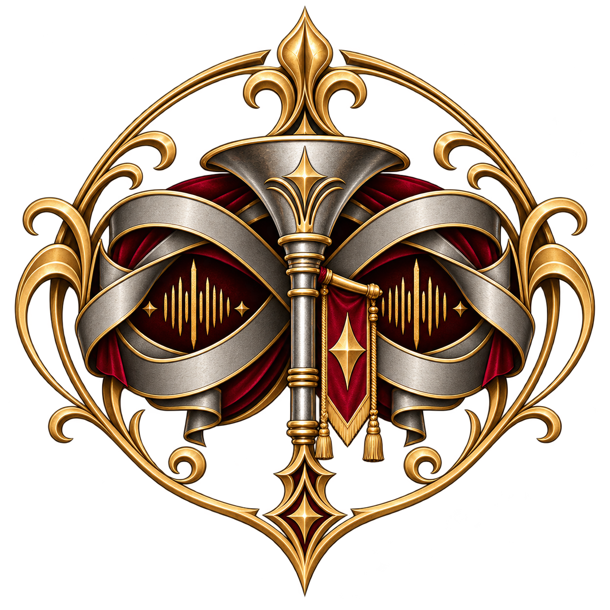
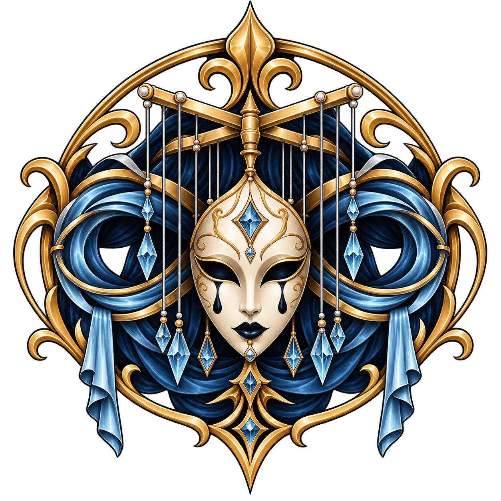
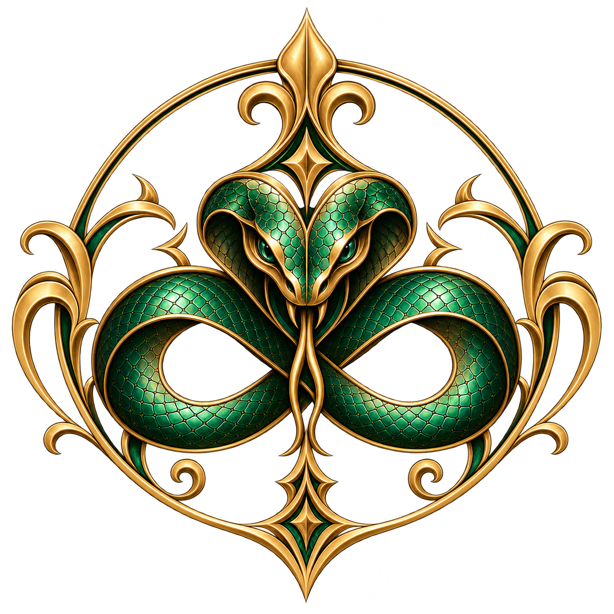
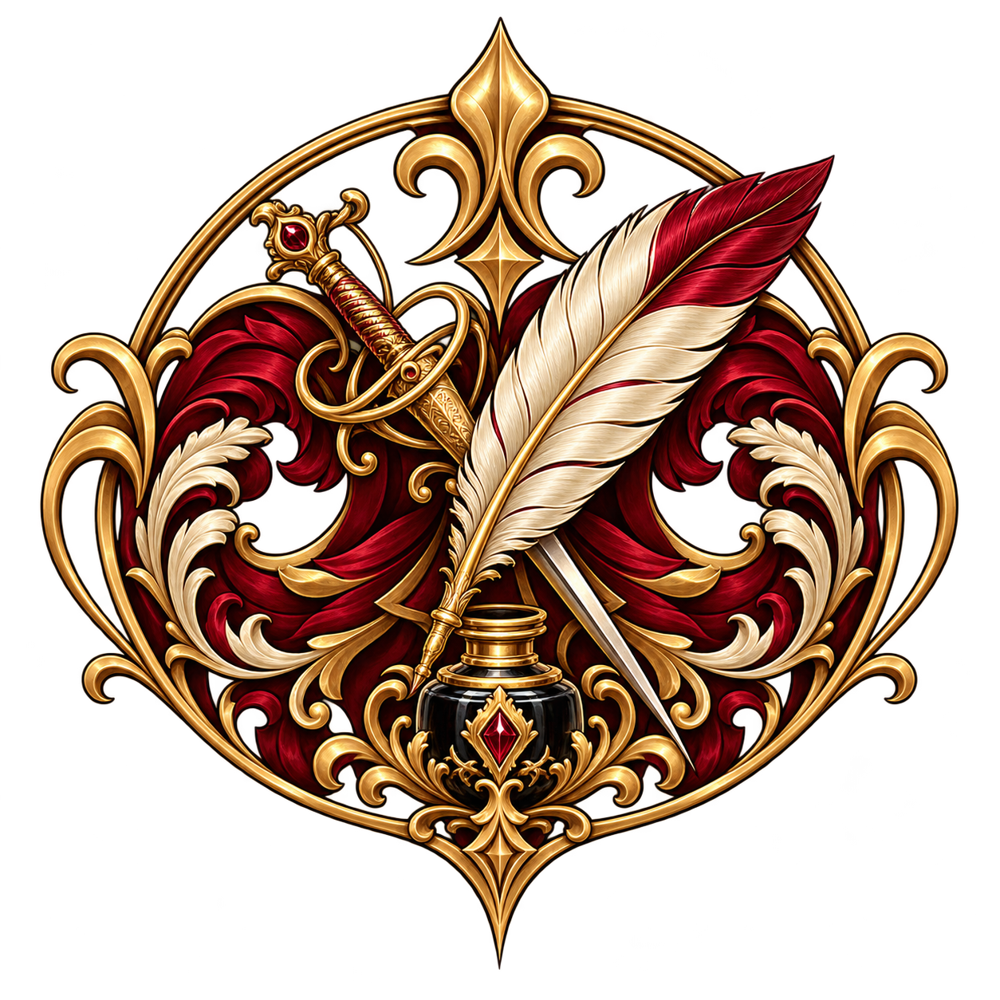
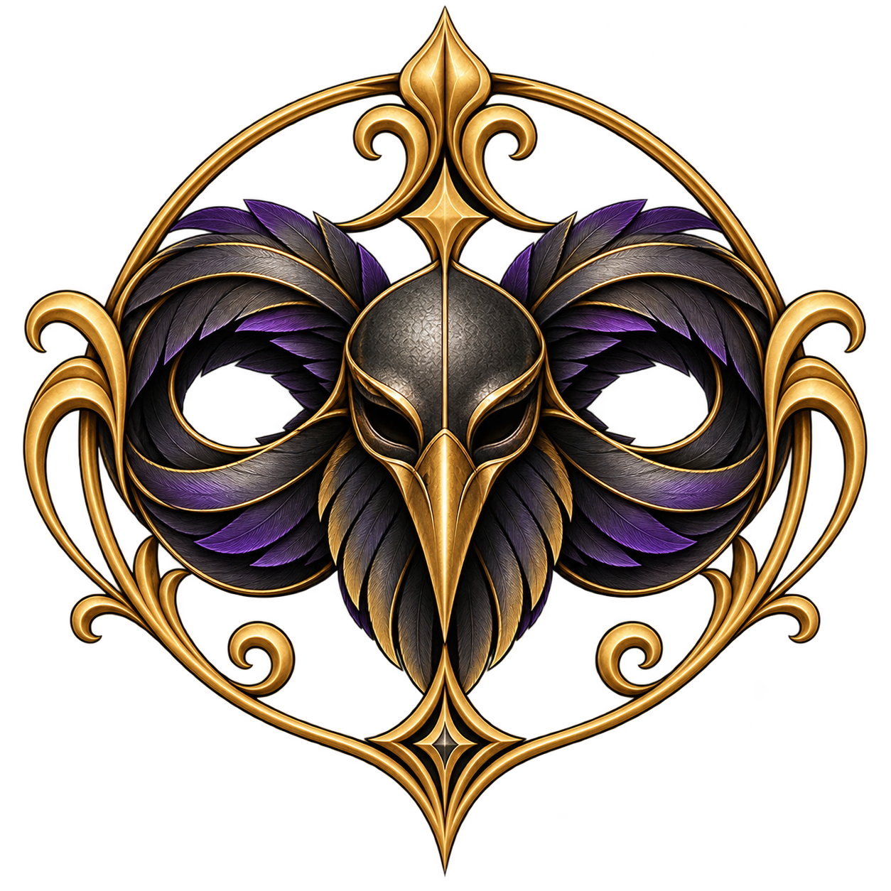
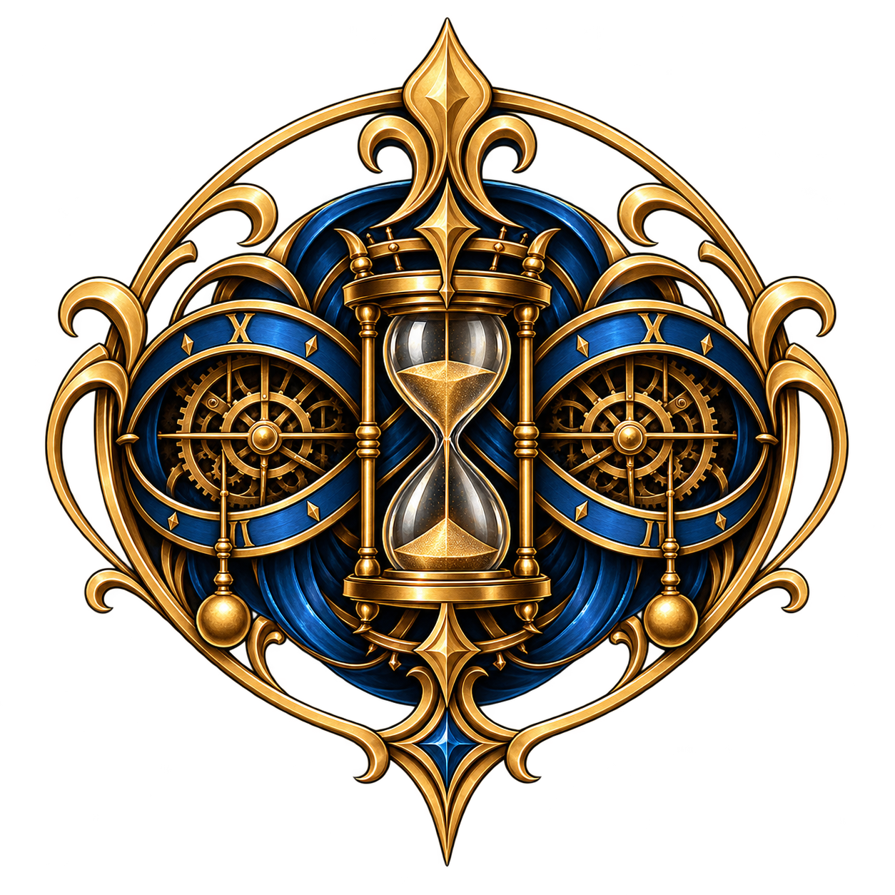
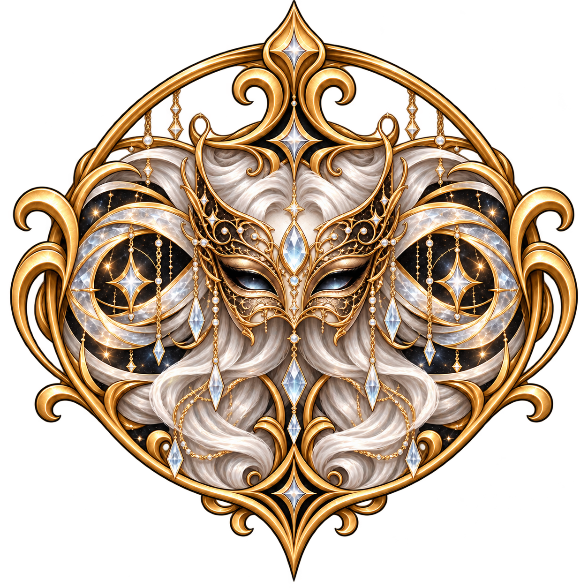

Espetáculos
| Títulos | Membros | Situação |
|---|---|---|
| Espetáculo Arcano |  | Em Progresso... |
| Alistamento Divino |   | Em progresso... |
| Baile do Jardim XI |  | Em planejamento |
| Palavras Benditas |  | Em espera. |
| Caça ao Tesouro |   | Concluído - Sucesso |
| O Último Aplauso | Concluído - Sucesso | |
| Sinfonia dos Ausentes | Concluído - Sucesso | |
| Galeria sem Rostos | Concluído - Sucesso | |
| Banquete das Sete Taças | Concluído - Sucesso | |
| Réquiem para um Rei | Concluído - Sucesso | |
| A Rosa Fúnebre | Concluído - Sucesso | |
| Cinzas sobre o Palco | Concluído - Fracasso | |
| O Leilão Impossível | Concluído - Sucesso | |
| O Funeral do Sol | Concluído - Sucesso | |
| Intervalo | Concluído - ??? |
| Títulos | Membros | Situação |
|---|---|---|
| Ensaio para Lugar Nenhum |
 |
Concluído - Sucesso |
| A Noite das Portas Abertas | Concluído - Sucesso | |
| O Coral dos Afogados | Concluído - Sucesso | |
| Nove Cadeiras Vazias | Concluído - Sucesso | |
| A Casa que Aprendeu a Gritar | Concluído - Fracasso | |
| A Colheita dos Espelhos | Concluído - Sucesso | |
| Procissão para Homem Nenhum | Concluído - Sucesso | |
| O Quarto Atrás do Palco | Concluído - Sucesso | |
| A Última Testemunha | Concluído - Fracasso | |
| O Céu sem Estrelas | Concluído - Sucesso | |
| O Fio e a Agulha | Concluído - Sucesso | |
| A Boneca sem Sombra | Concluído - Sucesso |
| Títulos | Membros | Situação |
|---|---|---|
| O Homem que Morreu Duas Vezes | Concluído - Sucesso | |
| O Evangelho das Cinzas | Concluído - Sucesso | |
| A Cidade sob o Lençol | Concluído - Fracasso | |
| Treze Minutos de Silêncio | Concluído - Sucesso | |
| O Jardim dos Nomes Mortos | Concluído - Sucesso | |
| A Ópera da Última Palavra | Concluído - Sucesso | |
| Cartas para Quem Nunca Nasceu | Concluído - Sucesso | |
| O Escritor sem Rosto | Concluído - Sucesso |
| Títulos | Membros | Situação |
|---|---|---|
| O Banquete da Viúva | Concluído - Sucesso | |
| Jardim para uma Criança Morta | Concluído - Sucesso | |
| O Beijo da Serpente | Concluído - Sucesso | |
| Sete Noivas para um Cadáver | Concluído - Fracasso | |
| A Flor que Bebia Sangue | Concluído - Sucesso | |
| Venenos para uma Rainha | Concluído - Sucesso | |
| O Jardim das Duas Irmãs | Concluído - Sucesso |
| Títulos | Membros | Situação |
|---|---|---|
| O Fim do Mundo | Concluído - Sucesso | |
| Meia-Noite ao Meio-Dia | Concluído - Sucesso | |
| O Trem que Nunca Chegou | Concluído - Sucesso | |
| A Décima Terceira Hora | Concluído - Sucesso | |
| Os Homens Parados | Concluído - Fracasso | |
| Ontem Depois de Amanhã | Concluído - Sucesso | |
| O Quarto dos 61 Segundos | Concluído - Sucesso | |
| O Relojoeiro Morto | Concluído - Sucesso |
| Títulos | Membros | Situação |
|---|---|---|
| O Santo de Madeira | Concluído - Sucesso | |
| A Última Confissão | Concluído - Sucesso | |
| O Palácio sem Rei | Concluído - Fracasso | |
| O Homem no Espelho Errado | Concluído - Sucesso | |
| Coroação dos Loucos | Concluído - Sucesso | |
| O Entreato | Concluído - Fracasso | |
| O Julgamento da Lua | Concluído - Sucesso | |
| Uma Peça para Nenhuma Plateia | Concluído - Sucesso | |
| O Santo que Pediu para Morrer | Concluído - Sucesso | |
| A Máscara de Outro Homem | Concluído - Sucesso | |
| O Banquete dos Condenados | Concluído - Fracasso | |
| Milagre em Três Atos | Concluído - Sucesso | |
| A Cidade que Esqueceu Domingo | Concluído - Sucesso | |
| O Julgamento sem Crime | Concluído - Sucesso | |
| A Comédia do Homem Morto | Concluído - Sucesso | |
| O Primeiro Aplauso | Concluído - Sucesso |
| Títulos | Membros | Situação |
|---|---|---|
| A Catedral sem Deus | Concluído - Sucesso | |
| O Sermão das Mil Vozes | Concluído - Sucesso | |
| Procissão do Homem Cego | Concluído - Sucesso | |
| Sete Sinos para o Fim | Concluído - Fracasso | |
| O Primeiro Anúncio | Concluído - Sucesso |
| Títulos | Membros | Situação |
|---|---|---|
| O Homem no Fundo do Poço | Concluído - Sucesso | |
| A Festa dos Carrascos | Concluído - Sucesso | |
| Onze Túmulos Vazios | Concluído - Sucesso | |
| A Criança no Campanário | Concluído - Fracasso | |
| O Último Homem da Aldeia | Concluído - Sucesso | |
| A Mulher que Não Tinha Nome | Concluído - Sucesso | |
| O Matadouro dos Santos | Concluído - Fracasso | |
| O Quarto sem Porta | Concluído - Sucesso | |
| O Homem que Não Projetava Sombra | Concluído - Sucesso | |
| O Cortejo das Máscaras Brancas | ??? | Registro incompleto |
| A Noite em que Ninguém Dormiu | Concluído - Sucesso | |
| O Carrasco sem Rosto | Concluído - Sucesso | |
| O Circo das Crianças Perdidas | ??? | Registro incompleto |
| Três Batidas na Porta | Concluído - Sucesso | |
| O Vilarejo que Não Amanheceu | Concluído - Fracasso | |
| A Ceia dos Enforcados | Concluído - Sucesso | |
| A Mulher Dentro da Parede | Concluído - Sucesso | |
| O Último Trem de Saint-Véran | Concluído - Sucesso | |
| O Homem que Pediu um Julgamento | Concluído - Sucesso | |
| O Segundo Funeral de Elias Mourant | Concluído - Sucesso | |
| A Noite das Lanternas Negras | ??? | Registro incompleto |
| O Teatro dos Mortos | Concluído - Sucesso | |
| O Julgamento | Concluído - Sucesso |
| Títulos | Membros | Situação |
|---|---|---|
| A Casa das Cortinas Fechadas | ??? | Registro incompleto |
| O Espelho de Saint-Lys | ??? | Concluído - ??? |
| A Mulher na Última Fileira | Concluído - Sucesso | |
| O Homem que Sabia o Final | ??? | Registro incompleto |
| As Sete Testemunhas | ??? | Concluído - ??? |
| O Quarto Ato | Concluído - Fracasso | |
| Um Truque para os Mortos | Concluído - Sucesso | |
| O Primeiro Improviso | Concluído - ??? | |
| Sem título | ??? | Registro danificado |
| Sem título | ??? | Registro danificado |
| ??? | ??? | ??? |